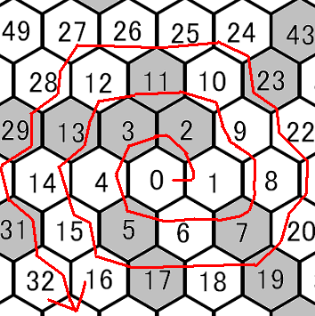

According to wikipedia and another document, drawing prime number on grid in spiral order,then many of line will appear by 45 slant. I thought what will happen if I draw them on honeycomb (hex) grid? I tried to search for internet but not found. That's why I tried to draw it.
In uram's spiral, numbers are on square grid and filled if it is prime. Here I try to set numbers on honeycomb grid and fill some color on prime grid. Sorry for dirty image .

The red point at the center is the starting point.This is 0.
The right-up is 2. left to 2 is 3. left-bottom of 0 is 5.
I draw it until 10000.
Clicking this image , you will see large image. (2000*2000. up to 100000)
I thought this image will divided to 6 area. but the line appear in three area, bottom and bottom-right area and
up and up-right and left-up and left-bottom. There might be some rule, isn't it?
I thought it is interesting if you can see drawing image.Here Javascript draw it. Please browse this page by newer modern browser because of HTML5 and canvas.
Prime numbers are drawn from the center starting with 2 in previous image. Here I created the animation the prime sequence grows as spiral from the center. It sounds like to have long time by JavaScript, I create movie . How about this rounding like movie?
It is very interesting to appear slant line in bottom and right-bottom area. (I believe this calculation is correct...)
I guess this research is good for the subject of the summer vacation of high school student. (but it may be needed to find some good or useful truth... not just for fun?) It is very hard for me to continue this!!
This document is licenced by
Attribution 2.1 Japan (CC BY 2.1)
Published : 2011-12-04
Last updated : $Date: 2013-03-01 23:48:55 +0900 (Fri, 01 Mar 2013) $